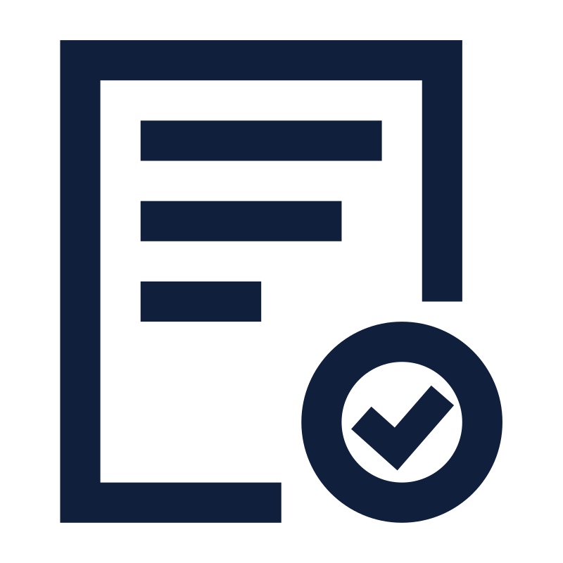

Servicios Especializados en Fibra de Vidrio y Soluciones Navales
Desde la construcción de embarcaciones hasta la motorización y pintura marina, en CONAVRE convertimos tus necesidades en proyectos reales.
📩 Solicitar Cotización¿Qué servicios ofrecemos?
Construcción de Embarcaciones
Fabricación de embarcaciones en fibra de vidrio de alta resistencia, personalizadas según cada necesidad.
Fibra de Vidrio Acero MaderaReparaciones Navales
Restauración estructural, laminados, refuerzos y recuperación de embarcaciones dañadas.
Reconstrucción Restauración Refuerzos EstructuralesMotorización e Instalaciones
Instalación de motores, sistemas de propulsión y adaptaciones mecánicas.
Motores Internos Motores Externos Propulsión NavalPintura Marina
Aplicación de esquemas de pintura resistentes a la corrosión y abrasión marina.
Antifouling Pintura Epóxica Alto Tráfico MarítimoEstructuras Especiales
Refugios, campers, módulos habitacionales o industriales en fibra de vidrio.
Refugios Modulares Módulos Industriales CampersModificaciones y Alteraciones
Ampliaciones, conversiones o adaptaciones a nuevos usos o regulaciones.
Conversión de Uso Ampliaciones Normativas DGTM¿Por qué elegir CONAVRE?
- Calidad de construcción naval bajo estándares exigidos DGTM.
-
 Años de experiencia en construcción, reparación y motorización de embarcaciones.
Años de experiencia en construcción, reparación y motorización de embarcaciones.
-
 Innovación en diseño de embarcaciones, estructuras modulares y soluciones personalizadas en fibra de vidrio.
Innovación en diseño de embarcaciones, estructuras modulares y soluciones personalizadas en fibra de vidrio.
-  Compromiso absoluto con la calidad de entrega, los plazos y la satisfacción del cliente.
- Asesoría técnica y acompañamiento personalizado en cada etapa del proyecto.
Confía en CONAVRE para hacer realidad tus proyectos navales o de estructuras especiales, con la calidad y cumplimiento que exigen las condiciones reales del mar chileno.
Preguntas Frecuentes sobre nuestros Servicios
¿Qué tipo de embarcaciones construyen en CONAVRE?
Construimos embarcaciones de fibra de vidrio o acero personalizadas para pesca artesanal, transporte de pasajeros, turismo costero y proyectos especiales, adaptadas a cada necesidad.
¿Realizan reparaciones de embarcaciones en la Quinta Región?
Sí. Realizamos reparaciones integrales de estructuras, cascos, cabinas, motorizaciones y pintura para embarcaciones de fibra de vidrio en Quintero, Valparaíso, Concón, Papudo y zonas cercanas.
¿Qué incluye el servicio de motorización?
Incluye la instalación de motores internos o externos, el diseño y cálculo del sistema de propulsión, incluyendo hélice, eje, tubo codaste, soporte estructural y adaptaciones mecánicas personalizadas para cada embarcación.
¿Aplican pintura marina especializada?
Sí. Aplicamos esquemas de pintura marina anticorrosiva y de alta resistencia, ideales para condiciones de exposición intensa, alta humedad y uso intensivo en el mar.
¿Cumplen con las normas exigidas por la DGTM?
Sí. En CONAVRE todos nuestros proyectos de construcción y reparación naval son desarrollados siguiendo los estándares y normas técnicas exigidas por la Dirección General del Territorio Marítimo y Marina Mercante (DGTM) de Chile.
¿Interesado en alguno de nuestros servicios?
En CONAVRE transformamos ideas en soluciones navales reales. Contáctanos y te asesoramos en tu proyecto de construcción, reparación o motorización.
📩 Solicitar Asesoría PersonalizadaCasos Reales

Trimarán de Turismo
Construcción integral en fibra de vidrio. Doble motorización, cabinas y equipamiento para transporte turístico.
Ver Proyecto
Reparación de Pesquera
Reestructuración, motorización nueva y esquema de pintura marina para embarcación artesanal.
Ver Proyecto
Refugios Glaciares
Diseño y construcción modular en fibra de vidrio para zonas de alta montaña. Aislación y resistencia total.
Ver ProyectoServicios en la Quinta Región
Desde nuestro astillero en Quintero atendemos clientes en Concón, Valparaíso, Papudo y Puchuncaví, ofreciendo servicios integrales de construcción, reparación y personalización de embarcaciones.
Trabajamos con pescadores, operadores turísticos, clubes de yates y clientes particulares que requieren calidad, cumplimiento y experiencia real en cada proyecto.
¿Listo para iniciar tu proyecto?
Con CONAVRE, tu idea se convierte en una solución naval segura y de alta calidad. ¡Contáctanos!
📩 Solicitar Cotización